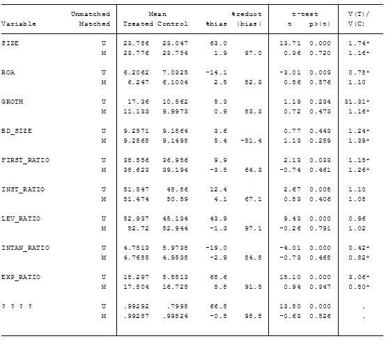
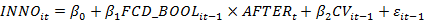

一、假说：
1、主动负债中使用外币债务可以促进企业创新
（主动负债意思是指不包括应付账款，预收账款等这类的负债）
2、主动负债中外币占有率越高，促进企业创新越明显
3、（接下来的工作是影响机制分析，暂时没有影响机制的假说）
二、计量模型：
(1)
INNO是企业创新指标，使用企业滞后一年 专利申请总数 和 发明型专利申请数 衡量。参考已有研究，衡量创新数量的指标一般有：专利申请数量，专利申请且在一定年限内被授权的数量，新产品销售额等等；衡量创新质量的指标一般有：专利申请的权利要求数，专利申请中发明型专利的数量等等。鉴于数据的可得性，选取 专利申请总数 衡量创新的数量，发明型专利申请数 衡量创新的质量。
FCD是外币债务使用指标，使用企业当年 是否使用外币债务 和 外币债务占总债务的比例 衡量。本文收集公司年报中外币债务数据( 包括短期借款、长期借款、应付债券等但不包括应付款项和预收账款，也不包括报表附注中指明用于购买大型设备，比如飞机的外币借款)；此处的总债务统计也不包括应付款项和预收账款等这类非主动负债行为的债务。
CV是控制变量，IND和YEAR是行业和年度固定效应。
具体变量名称及其含义如下表：
|
变量名称 |
定义 |
样本数 |
均值 |
标准差 |
INNO |
PAT_NUM |
ln(专利申请总数+1) |
1869 |
3.586 |
2.007 |
INV_NUM |
ln(发明型专利数量+1) |
1869 |
2.833 |
1.899 |
|
FCD |
FCD_BOOL |
是否主动持有外币债务 |
1869 |
0.454 |
0.498 |
FCD_RATIO |
主动外币负债/主动负债 |
848(非0值) |
14.01 |
26.6 |
|
CV |
SIZE |
ln(总资产) |
1869 |
23.382 |
1.213 |
ROA |
总资产收益率 |
1869 |
6.652 |
5.896 |
|
GROTH |
销售收入同比增长率 |
1869 |
13.732 |
122.514 |
|
BD_SIZE |
董事会人数 |
1869 |
9.214 |
1.978 |
|
FIRST_RATIO |
第一大股东持股比例 |
1869 |
37.747 |
16.195 |
|
INST_RATIO |
机构持股比例 |
1869 |
50.096 |
21.643 |
|
LEV_RATIO |
资产负债率 |
1869 |
48.714 |
18.186 |
|
INTAN_RATIO |
无形资产/总资产 |
1869 |
5.414 |
6.571 |
|
EXP_RATIO |
出口收入/总收入 |
1869 |
11.346 |
19.207 |
|
AGE |
ln(公司年龄+1) |
1869 |
2.435 |
0.6206 |
数据选取：A股中证800 2014-2016年，非金融，非地产，非ST公司的数据，并剔除数据缺失样本。数据来源于wind数据库和国泰安数据库。关于外币债务，年报中没有明确说明外币债务情况的视为不使用外币债务，因此外币债务的使用水平可能会被低估。
结果汇报：在估计式( 1) 时，本文将 PAT_NUM 、 INV_NUM和AGE分别加 1 再取自然对数，对SIZE取自然对数。
考虑到所使用数据为非平衡面板数据，采用混合最小二乘法( pooled OLS) 估计，公司创新水平可能会受到宏观经济状况和行业因素的影响，加入了年度和行业因素哑变量，为保证结论的稳健性，还对所有回归结果的标准误进行了怀特异方差修正。
其中，对FCD_RATIO进行回归时，仅考虑有外币债务(FCD_BOOL = 1)的公司。
|
外币债务与企业创新 |
外币债务占比与企业创新 |
||||||
变量 |
||||||||
系数 |
标准误 |
系数 |
标准误 |
系数 |
标准误 |
系数 |
标准误 |
|
FCD_BOOL/ FCD_RATIO |
.285*** |
.078 |
.272*** |
.077 |
.0031* |
.0016 |
.0032* |
.0017 |
SIZE |
.765*** |
.041 |
.748*** |
.041 |
.757*** |
.053 |
.767*** |
.0559 |
ROA |
.033*** |
.006 |
.026*** |
.007 |
.039*** |
.011 |
.026** |
.0116 |
GROTH |
-.001*** |
.0002 |
-.0003** |
.0001 |
-.001*** |
.0001 |
-.0003*** |
.00012 |
BD_SIZE |
.033* |
.018 |
.0344* |
.019 |
.037 |
.025 |
.062** |
.0258 |
FIRST_RATIO |
-.007** |
.0027 |
-.009*** |
.0026 |
-.012*** |
.0038 |
-.012*** |
.0039 |
INST_RATIO |
.0027 |
.0021 |
.0019 |
.002 |
.0034 |
.003 |
.0012 |
.0029 |
LEV_RATIO |
-.001 |
.0026 |
-.003 |
.0025 |
.0056 |
.004 |
.0042 |
.0037 |
INTAN_RATIO |
.003 |
.0053 |
.002 |
.005 |
.0068 |
.008 |
.0054 |
.008 |
EXP_RATIO |
.008*** |
.0021 |
.006*** |
.002 |
.0042* |
.002 |
.0034 |
.0024 |
AGE |
-.229*** |
.062 |
-.11* |
.059 |
-.3*** |
.0912 |
-.182** |
.091 |
c |
-15.7*** |
.954 |
-16.0*** |
.940 |
-15.9*** |
1.352 |
-16.8*** |
1.41 |
行业/年度效应 |
控制 |
控制 |
控制 |
控制 |
||||
观测值 |
1869 |
1869 |
848 |
848 |
||||
修正R2 |
0.4556 |
0.4308 |
0.5236 |
0.4893 |
||||
（鼠标停留在蓝色字体上可查看stata输出结果）
结果FCD_BOOL均在1%水平显著， FCD_RATIO均在10%水平显著，假设1、假设2均成立。
内生性问题：由于创新水平高的企业可能更为频繁的国际贸易或者更充足的现金流需求，因此创新活跃的企业可能持有更多的外币债务。这就使得前述结果可能有内生性问题。首先，本文采用滞后一期的专利数据作为因变量，一定程度上克服互为因果的内生性问题。其次，本文还采用倾向得分匹配与双重差分模型来进一步克服模型内生性。
首先估计如下 probit 模型:
其中EX_RISK为公司是否面临外汇风险，前文已经有出口收入数据，不过出口收入只能识别出口型的上市公司，但不能识别依赖进口材料进行生产的非出口型上市公司，为此本文进一步考察了上市公司是否存在汇兑损益，如果上市公司没有境外收入但汇率损益不为零，那么该公司也界定为可能面临外汇风险冲击的公司。
根据上式计算出每个公司使用外币债务的倾向得分，然后按照最邻近匹配原则法按照 1:1的比例进行样本配对。（下图为stata检验PSM平衡性的输出）
1、PSM的平衡性检验标准是什么？ATT一定要显著吗？我看网上的说法很多，没有定论。
2、为什么我按照1：1匹配，实际上匹配结果对照组和处理组样本数量远偏离1：1？
3、为什么其他文献的匹配结构大多有一半左右的样本损失，而我没有？比如下图的样本损失仅为66个，因为有放回匹配的原因吗？
）
结果显示在配对之后所有变量系统性偏差小于10%，且t检验显示所有变量处理组与控制组无显著差异（我这种判断方式是正确的吗？），在此基础上，采用模型(1)重新进行检验：
|
外币债务与企业创新 |
外币债务占比与企业创新 |
||||||||
变量 |
PAT_NUM |
INV_NUM |
PAT_NUM |
INV_NUM |
||||||
系数 |
标准误 |
系数 |
标准误 |
系数 |
标准误 |
系数 |
标准误 |
|||
FCD_BOOL/ FCD_RATIO |
.281*** |
.0792 |
.274*** |
.0781 |
.0033** |
.0016 |
.0034** |
.0017 |
||
CV |
（数据略） |
|||||||||
c |
-16.05*** |
.929 |
-16.48*** |
.945 |
-16.73*** |
1.424 |
-17.6*** |
1.49 |
||
行业/年度效应 |
控制 |
控制 |
控制 |
控制 |
||||||
观测值 |
1,803 |
1,803 |
841 |
841 |
||||||
修正R2 |
0.45 |
0.425 |
0.5276 |
0.4932 |
||||||
结果依然显示假设1，2成立。
其次估计如下双重差分模型:

其中AFTER是虚拟变量，公司首次使用外币债务之后的年度为1，否则0。还加入了年度和行业哑变量，结果为：
变量 |
PAT_NUM |
INV_NUM |
||
系数 |
标准误 |
系数 |
标准误 |
|
FCD_BOOL * AFTER |
.3223*** |
.0929 |
.3*** |
.0938 |
CV |
（数据略） |
|||
c |
-15.888*** |
.952 |
-16.181*** |
.934 |
行业/年度效应 |
控制 |
控制 |
||
观测值 |
1,869 |
1,869 |
||
修正R2 |
.455 |
.43 |
||
交叉项系数为正，说明使用外币债务，提高了企业的创新水平。